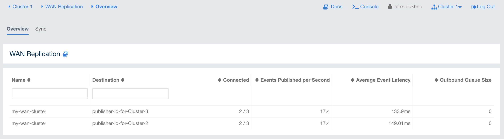

Monitoring WAN Replication
WAN replication schemes are listed under the WAN Replication menu item on the left. When you click on a scheme, a new page for monitoring the targets which that scheme has appears on the right, as shown below:

In this page, you see the WAN Replication Operations Table for each target which belongs to this scheme. One of the example tables is shown below:

-
Connected: Status of the member connection to the target. "Yes" means that the member is sending WAN events to the target and connected to it. "No" means the member is not sending WAN events to the target due to, e.g., having not enough events to be sent and other members are already sending the events in hand.
-
Events Published per Second: Number of published events per second. Please see the paragraph below.
-
Average Event Latency: Average latency of sending a record to the target from this member. Please see the paragraph below.
-
Outbound Queue Size: Number of records waiting in the queue to be sent to the target.
-
Action: Pause, stop or resume replication of a member’s records. You can also clear the event queues in a member using the "Clear Queues" action. For instance, if you know that the target cluster is being shut down, decommissioned, put out of use and it will never come back, you may additionally clear the WAN queues to release the consumed heap after the publisher has been switched. Or, when a failure happens and queues are not replicated anymore, you could manually clear the queues using, again the "Clear Queues" action.
-
State: Shows current state of the WAN publisher on a member. See Changing WAN Publisher State for the list of possible WAN publisher states.
Events Published per Second and Average Event Latency are based on the following internal statistics:
-
Total published event count (TBEC): Total number of events that are successfully sent to the target cluster since the start-up of the member.
-
Total latency (TL): Grand total of each event’s waiting time in the queue, including network transmit and receiving ACK from the target.
Each member sends these two statistics to the Management Center at intervals of 3 seconds (update interval). Management Center derives Events Published per Second and Average Event Latency from these statistics as formulated below:
Events Published per Second = (Current TBEC - Previous TBEC) / Update Interval
Average Event Latency = (Current TL - Previous TL) / (Current TBEC - Previous TBEC)
Changing WAN Publisher State
A WAN publisher can be in one of the following states:
-
REPLICATING(default): State where both enqueuing new events is allowed, enqueued events are replicated to the target cluster. -
PAUSED: State where new events are enqueued but they are not dequeued. Some events which have been dequeued before the state was switched may still be replicated to the target cluster but further events will not be replicated. -
STOPPED: State where neither new events are enqueued nor dequeued. As with thePAUSEDstate, some events might still be replicated after the publisher has switched to this state.
You can change a WAN publisher’s state by clicking the Change State
dropdown button on top right hand corner of
the WAN Replication Operations Table.

WAN Sync
You can initiate a synchronization operation on an IMap for a specific target cluster. This operation is useful if two remote clusters lost their synchronization due to WAN queue overflow or in restart scenarios.
Hazelcast provides the following synchronization options:
-
Default WAN synchronization operation: It sends all the data of an IMap to a target cluster to align the state of target IMap with the source IMap. See Synchronizing WAN Clusters for more information.
-
WAN synchronization using Merkle trees: To initiate this type of synchronization, you need to configure the cluster members. See the Delta WAN Synchronization section in Hazelcast IMDG Reference Manual for details about configuring them. Make sure you meet synchronizing-wan-clusters#requirements-for-delta-wan-sync[all the requirements] to use Delta WAN Synchronization and do the configuration on both the source and target clusters.
To initiate WAN Sync, open the WAN Replication menu item on the left and navigate to the Sync tab.

Click Start button to open the dialog, enter the target details for the sync operation and click Sync to start the operation.

You can also use the "All Maps" option in the above dialog if you want to synchronize all the maps in source and target cluster.
You can see the progress of the operation once you initiate it.

WAN Consistency Check
You can check if an IMap is in sync with a specific target cluster. Click Check button to open the dialog, enter the target details for the consistency check operation and click Check Consistency to start the operation.

You can see the progress of the operation once you initiate it.

| You need to use Merkle trees for WAN synchronization to be able to check for the consistency between two clusters. You need to configure the Merkle trees on both the source and target clusters. If you do not configure it for the source cluster, consistency check is ignored. If it’s enabled for the source cluster but not for the target cluster, all entries are reported as if they need a sync because a sync operation will be a full sync in the absence of Merkle trees. |

Add Temporary WAN Replication Configuration
You can add a temporary WAN replication configuration dynamically to a cluster. It is useful for having one-off WAN sync operations. The added configuration has two caveats:
-
It is not persistent, so it does not survive a member restart.
-
It cannot be used as a target for regular WAN replication. It can only be used for WAN sync.

See the WAN Replication section in Hazelcast IMDG Reference Manual for details about the fields and their possible values.
After clicking the Add Configuration button, the new WAN replication configuration is added to the cluster. You can see the new configuration when you try to initiate a WAN sync operation as described in the previous section.